Applying analytical and marketing knowledge for iFood data
GitHub LinkOur objective was to understand the characteristic features of customers, their purchase behaviour and the impact of iFood’s marketing activities. Globally, the company had solid revenues, but the profit growth perspectives for the next 3 years are not promising. For this reason, this project aims to build several strategic initiatives to invert this situation.
About Customers
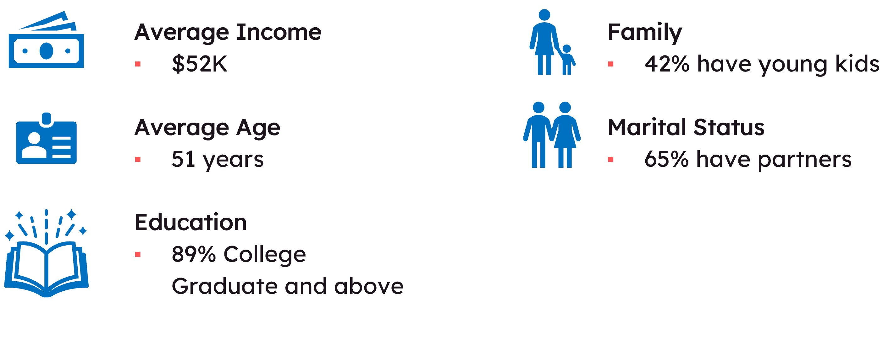
Current Business Scenario
• Volume of the store purchases is more than 1.4 times that of web purchases • Wine is the most preferred item 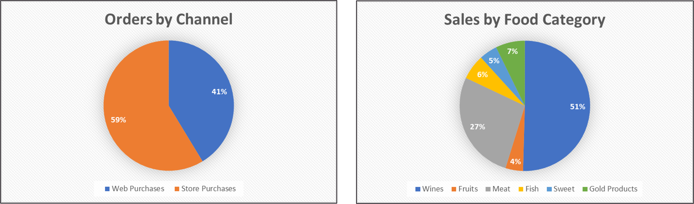
Exploring Customer Characteristics
• Most customers are between the age of 50-55
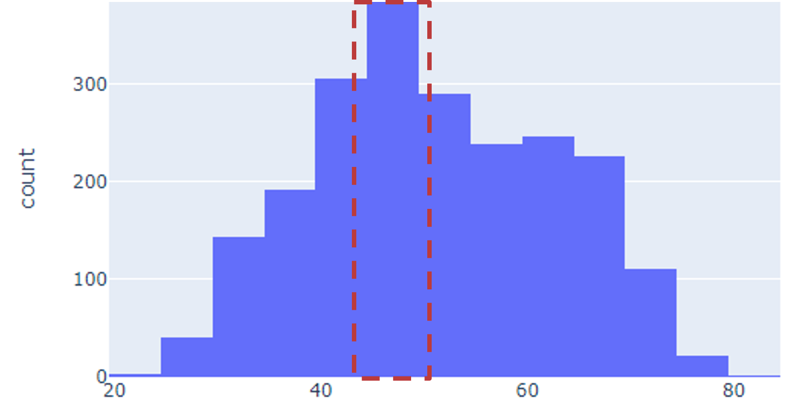• Most customers have income between 40k to 70k per annum
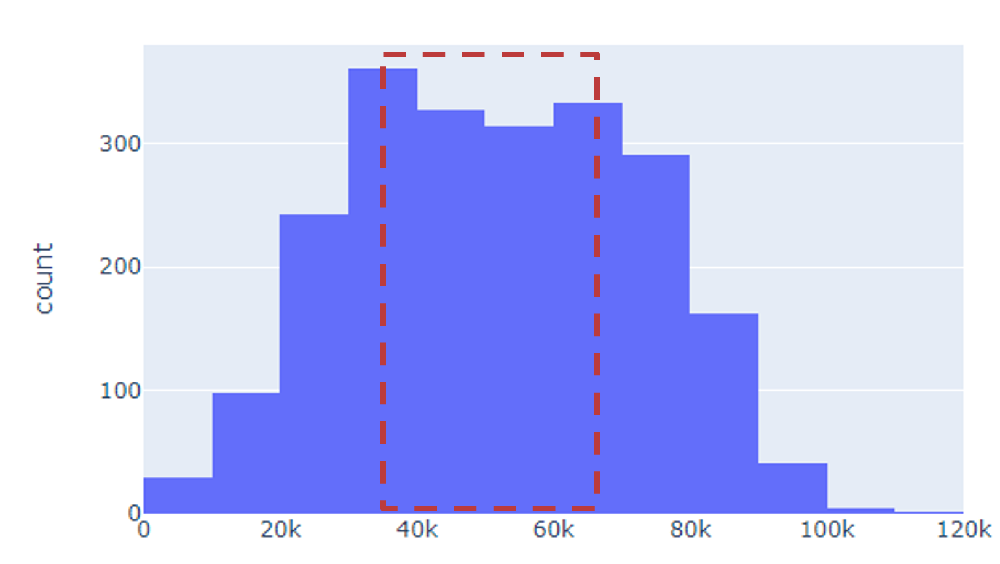• Most of customers are graduated
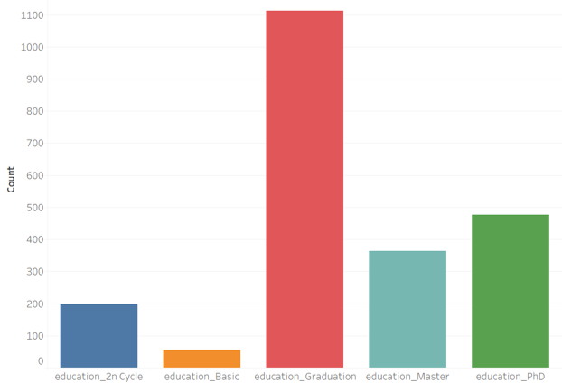• Majority of customers don’t have children
Validating Purchase Behaviour
I. First Hypothesis: H0: Sales are not impacted by age of customer H1: Sales are impacted by age of customer We get a p-value of 2.48e-08, which means we have enough statistical evidence to reject the null hypothesis and conclude that sales are impacted by age
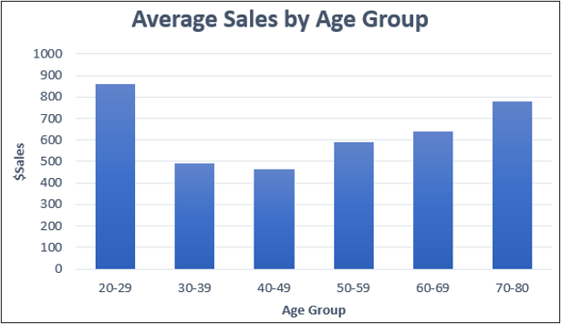II. Second Hypothesis: H0: Sales are not impacted by income of customer H1: Sales are impacted by income of customer We get a p-value < 2e-16, which means we have enough statistical evidence to reject the null hypothesis and conclude that sales are impacted by income
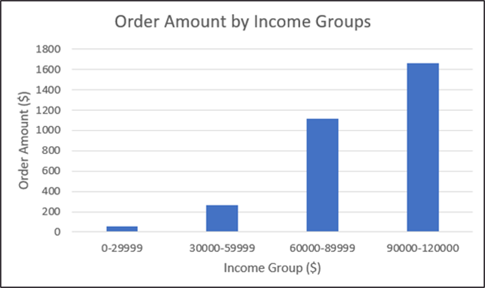III. Third Hypothesis: H0: Customers without kids do not spend more than customers with kids H1: Customers without kids spend more than customers with kids We get a p-value < 2e-16, which means we have enough statistical evidence to reject the null hypothesis and conclude that customer without kids spend more than customers with kids
Factors Affecting Campaign Effectiveness
On average, the customers who accepted campaigns in the past also showed tendency of accepting the current campaign.
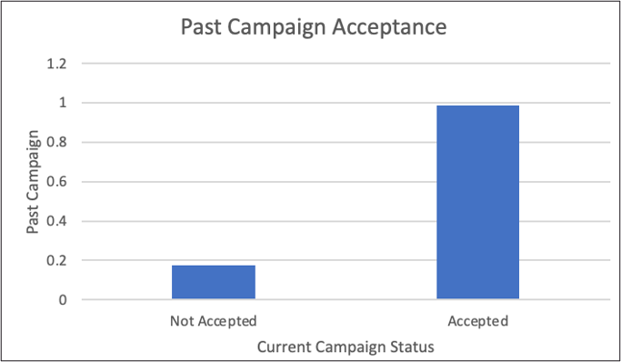Customers who accepted the campaign have higher customer lifetime.
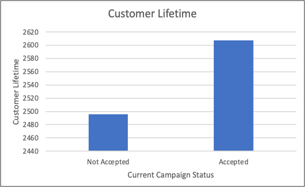Campaign acceptance higher with customers who have made a more recent purchase.
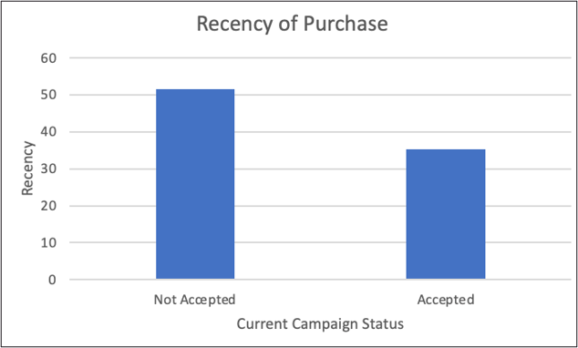Customer Segmentation
4 Customer segments were created using K-means on customer’s Order Recency, Frequency and Amount Spent. Understanding the demographics and purchase behaviors of these segments will help iFood target them better.
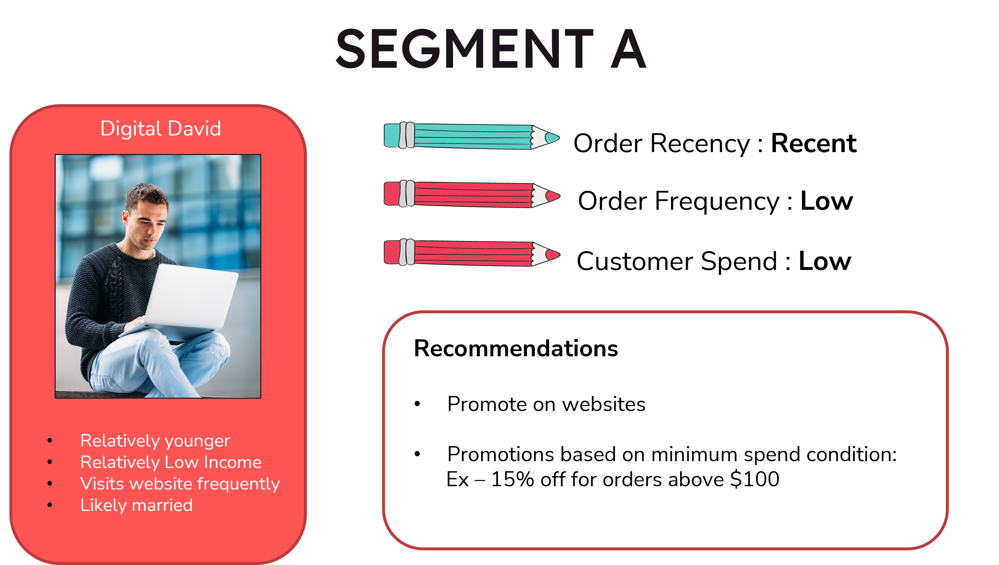 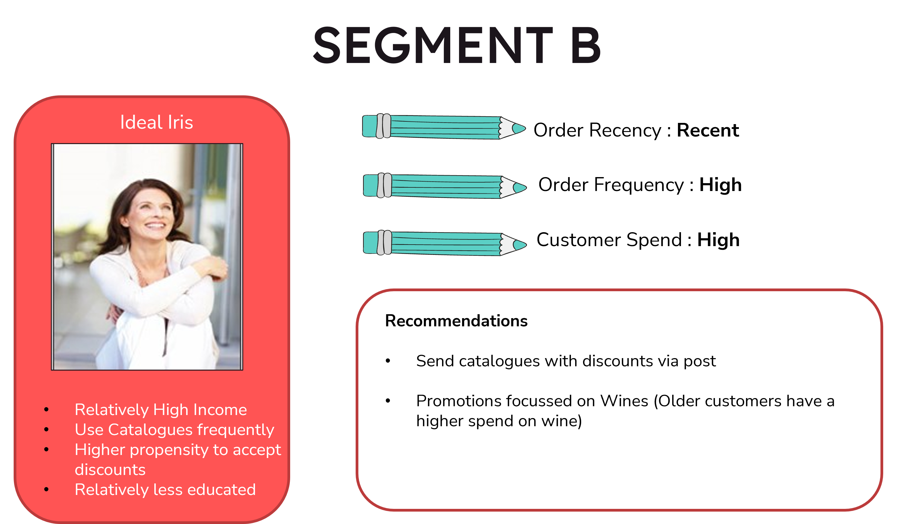 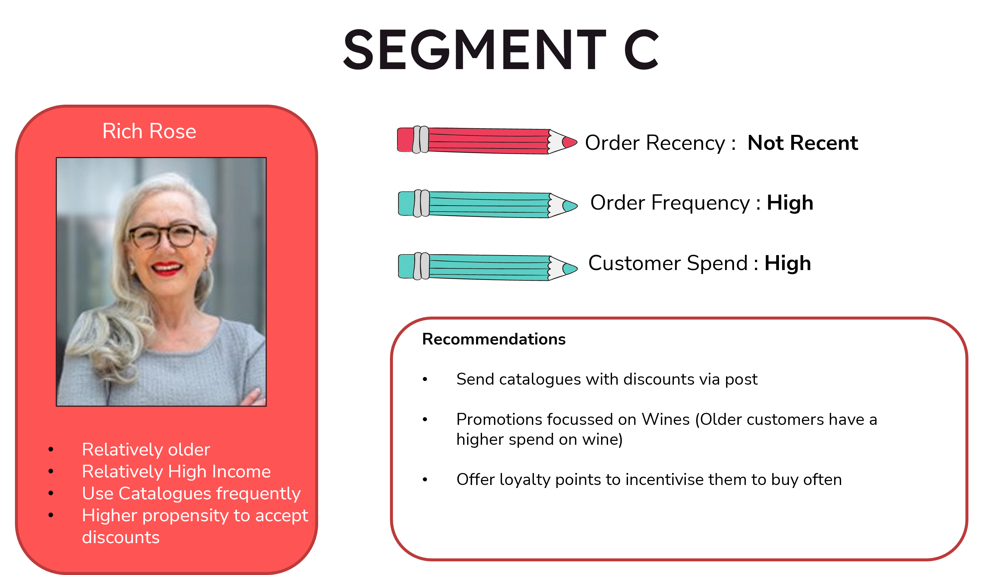 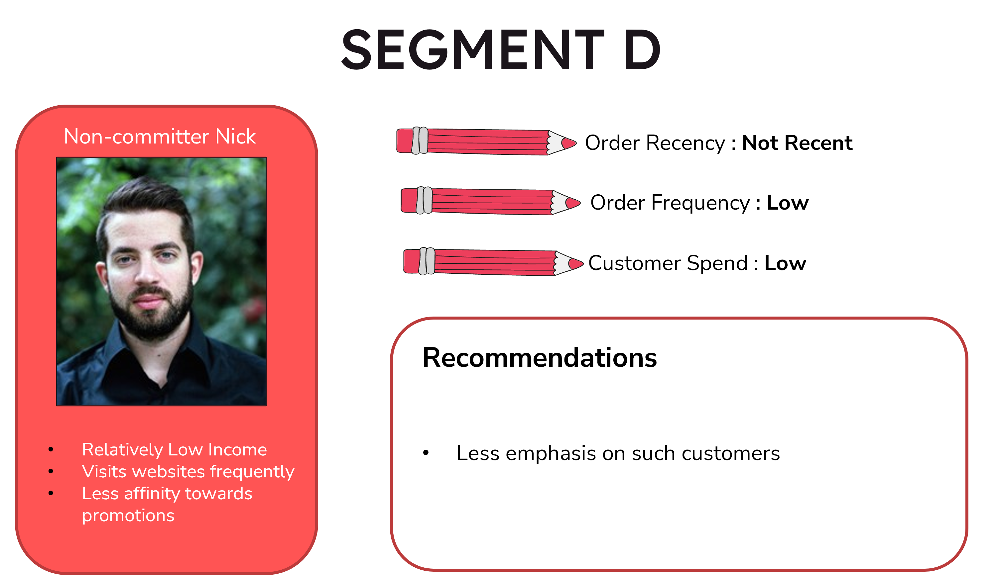Recommendations
• In future campaigns, focus on customers with a high customer lifetime, made recent purchases and who have accepted campaigns before • Implement customer segment-based promotions to target these segments effectively • Products of having a high probability of being purchased together should be placed together in stores (or recommended on websites)